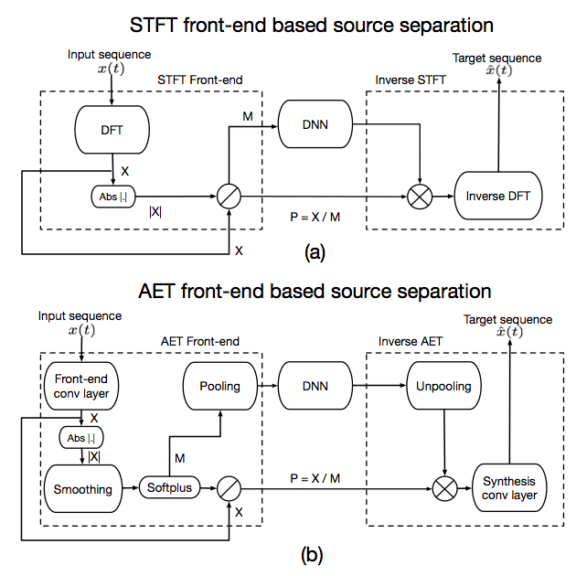
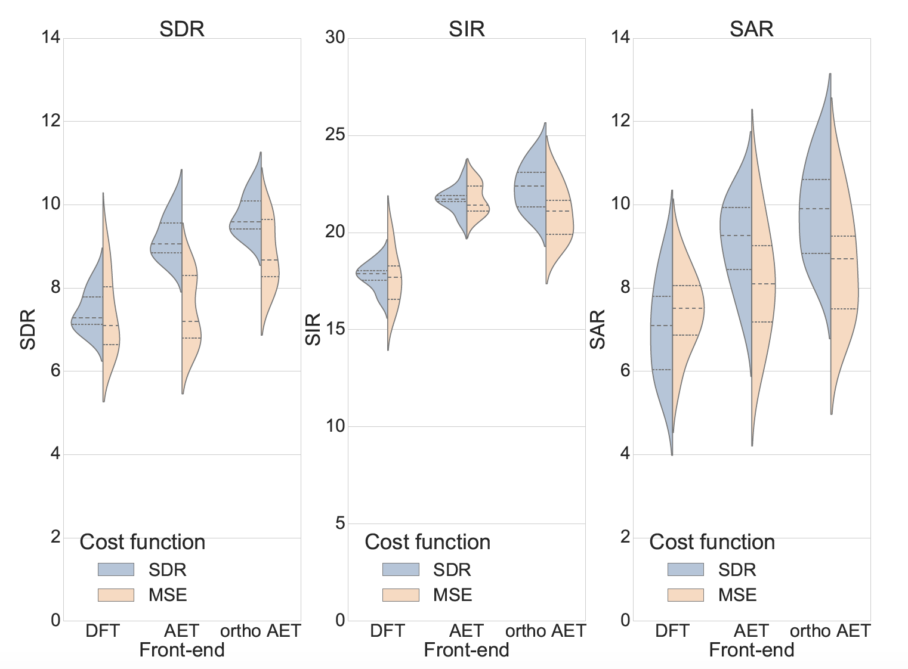

End-to-end Source Separation using Adaptive Front-ends
Source separation and other audio applications have traditionally
relied on the use of short-time Fourier transforms as a front-end
frequency domain representation step. The unavailability of a neural
network equivalent to forward and inverse transforms hinders the implementation
of end-to-end learning systems for these applications.
In this work, we present an auto-encoder neural network that can act as an equivalent
to short-time front-end transforms. We demonstrate the ability
of the network to learn optimal, real-valued basis functions directly
from the raw waveform of a signal and further show how it can be
used as an adaptive front-end for supervised source separation.

Figure: Block diagram of generalized NN based source separation
system using (a) STFT front-end (top) and (b) the proposed adaptive
front-end transform (bottom)
Here are some separation samples!
Reference: Male-Female Speech mixture from TIMIT database at 0 dB.
Female DFT: The female voice separated using DFT.
Female AET: The female voice separated using adaptive front-ends.
Female ortho AET: The female voice separated using adaptive and orthogonal front-ends, (i.e., the analysis transform is the transpose of the synthesis transform)
#.
Reference.
Female DFT
Female AET
Female ortho AET
1
2
3
4
5
6
7
8
9
10
In terms of separation performance, these transforms significantly outperform
their Fourier counterparts.

Figure: Comparison of source separation performance on 20 speech
on speech mixtures in terms of BSS EVAL parameters. We compare
the separation performance for multiple front end transforms
viz., STFT, AET and orthogonal AET. The dashed line in the centre
indicates the median value and the dotted lines above and below
indicate the interquartile range. We see that opting for an adaptive
front-end results in a significant improvement in source separation
performance over STFT front-ends. Comparing the cost-functions
we see that SDR (left) is a more appropriate cost-function to MSE
(right) for end-to-end source separation.